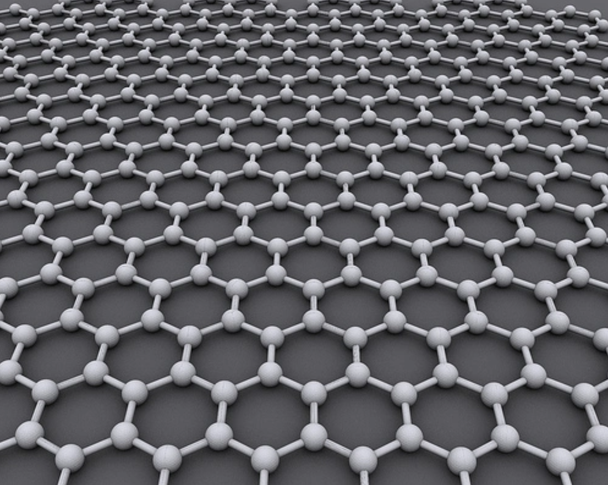

Graphene-based electronics
Graphene derives from the same materials as pencils. Graphene is formed by tightly-knit carbon atoms arranged in a sheet only one atom thick. It’s 200 times stronger than steel, yet it is flexible, stretchable, transparent, more conductive than copper, and has good heat dissipation. A single square-meter sheet of graphene can support up to 4 kilograms despite weighing just 0.0077 grams itself.
Graphene structure. Image credit: AlexanderAlUS
{kind=link}
Discovered in 2004, graphene won the Nobel prize. It has multiple applications, including:
- Biomedical devices
- Energy
- Electronics
- Sensors
- Composites
Unfortunately, graphene doesn’t have a bandgap like silicon and this is currently limiting its use as a silicon replacement in integrated circuits. While the 2D carbon material has no bandgap, bilayer graphene can be tuned to have a bandgap. Bilayer graphene films on silicon carbide can be better controlled. Trilayer graphene can also be tunable to produce a bandgap to develop field-effect transistors in a semiconductor device.
You can read more about the enablers that lead to this reading these blog posts, Graphene and Carbon Nanotubes Part 1 and Part 2.